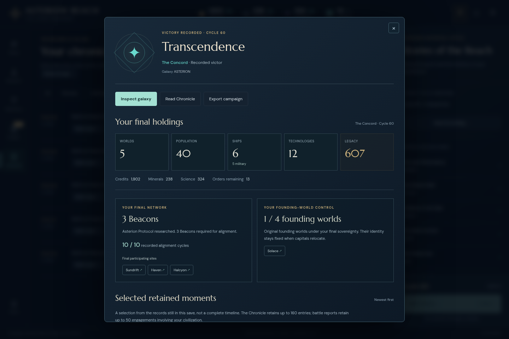

ASTERION: hold the final network
The default seed reached Transcendence at cycle 60. A peaceful opening became a defended alignment race: Choir and Khar declared war, five battles followed, and Haven’s remaining cruiser held through the final assault.
Development index · Full player report · Independent replay

One campaign, two interface versions
The original opening used ordinary visible controls on version 0.21.0 and reached cycle 12. Its untouched export was imported through the normal file picker into immutable version 0.21.1, then played to the natural ending. There were no save edits, grants, strategy automation, engine commands or rollback.
The final replay begins at that actual cycle-12 export; it does not reconstruct cycles 1–12. The fourteen engine modules are identical across the played continuation and released version 0.21.2, as recorded in the source comparison. This establishes engine continuity, not a claim that the older interface was the current release.
The decisions and their consequences
- Four founding worlds were identified; Nacre became the fifth colony at cycle 34. Academies, a Forge and ordinary fleet reinforcement supported a compact empire.
- Three Beacons came online before the alignment run. Choir declared war at 54 and Khar at 55, ending two trade agreements while funding remained sufficient.
- Halcyon lost a cruiser in its first defense. Paid repairs, a new cruiser and two Shipyard replacements rebuilt the defensive positions.
- Haven’s four-frigate lead was destroyed across the final attack. The remaining cruiser defeated the last attacker and stood at 12.5/85 hull after passive repair. Alignment reached 10/10 without interruption.
The final empire retained four cruisers, one frigate and one scout, with Legacy 607 and 1,902 credits. Five combat reports and all 138 Chronicle entries remain in the final save. The player report links actual checkpoints, decisions, screenshots and the complete request ledger.
What was independently checked
A separate reviewer reconstructed successful UI receipts into 177 ordinary commands and compared every command after JSON reload. All 178 validated states, eleven original exports and 111 rendered turn/resource observations agree. Root reproduced all eight generated JSON outputs byte-for-byte; see the reproduction record. The reviewer contributed to earlier engine implementation; independence here concerns reconstructing another operator’s recorded play.
Five continuation driver errors remain documented, including interrupted navigation after a public war briefing and a postgame filter selector guess. Unexecuted batch tails were not turned into game commands. The only new product finding was the zero-Beacon funding-link wording, subsequently corrected in version 0.21.2.
Reproduce and inspect
From a repository checkout with Node.js 22+ and Git history available:
node docs/default-campaign/verify.mjs node docs/default-campaign/replay.mjs --out /tmp/asterion-default-reproduction
The wrapper verifies packaged hashes and supplies copied original inputs, played build fingerprints and the historical engine pin. Its output must be outside this bundle. The five files under frozen-build/ fingerprint the played build; they are not a complete standalone game distribution.
- Original 196-file manifest and first finished save.
- Final independent reconstruction, with fourteen frozen artifacts.
- Earlier frozen replay checkpoints: cycle 30, cycle 40 and cycle 50.
- Complete packaged artifact manifest.